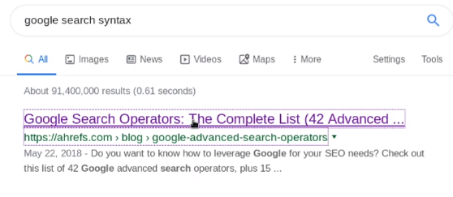

utilizing social media :
search on linkedin , instagram, facebook
search for image, employee name , badge id
search for system they use , software, computer, desk picture
when we search employee as we alredy have email format
so we have employee name and email or if we got badge photo then it is gold mine